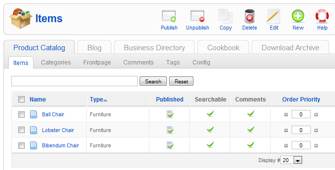
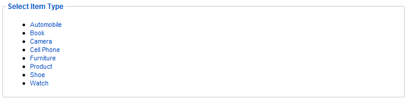
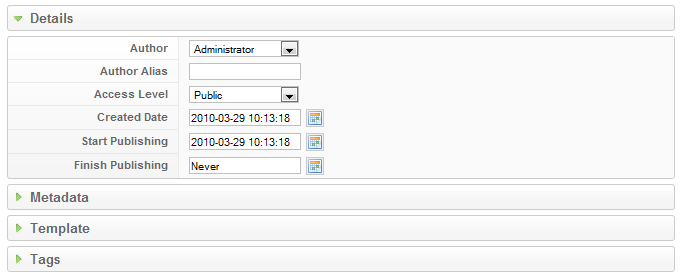
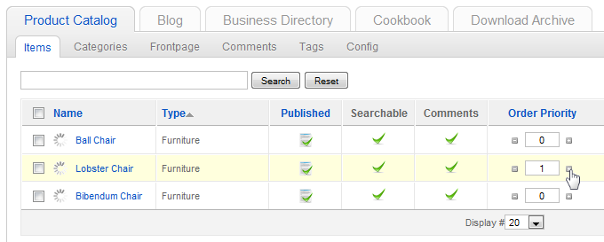

Create and manage items
This is a tutorial on how to create items in your ZOO and manage them inside of the categories.
Create a new item
Click on the app instance in the tab bar of the ZOO, then click on Items in the second tab bar. You'll see all items in your app instance.

To create a new item, simply click on the New button in the top right corner of the screen.

Now you have to select the items type. To learn how you can create your own custom type, please visit {doc: create-new-types text: this tutorial}.

On the next screen on the left you can provide all information for the new item. On top you can select the basic settings of the items like the name, if it is published or not, if you can use the search to find the product, if the visitors can leave comments on this item and of course you can choose the categories. With the option 'Frontpage' you can choose whether the item is shown on the frontpage of your app or not. You can press and hold the Ctrl Key on your keyboard to select more than one category.

When you enter the name of the item, you will see that the alias, which we called slug, is created automatically. The slug is used for search enginge friendly (SEF) urls, if you turn on this option in your Joomla installation. Usually you do not need to change the slug but if the automatically created slug doesn't suit your needs, you can simply click on it and change it to another alias.

Now you can put all other information in the according fields and configure your item. For example type in a teaser description and a description and select or upload images for the item. In the configuration of the type you can choose for some elements to be repeatable. This means, you can click on the Repeat Element button, and another field of the same kind will appear right underneath the last one.

On the right you can configure additional settings of the item, like the details about the author, the access level and the creation/publishing dates. On the other tabs you can set the metadata used by searchengines, make changes to the template configuration and set up tags for your product. You can see how to create tags for your items in {doc: create-and-manage-tags text: this tutorial}.
Don't forget to click on Save in the top right corner of the screen to save your changes and configuration.
Managing the items
When you click on items in the tab bar, you see a list of all items of your app instance.
To be more flexible sorting your items we added a column called Order Priority into the item list. The functionality is very simple. The Item Order Priority has the highest priority in sorting items. It will override the item order you set in your app instance-, frontpage-, category or module settings. For example, if you want to show one of the items above all others, but don't want to change the standard order of the items, just increase the order priority of this item. After that, it will be shown on the top of the others.
To change the priority, simply click the + or - buttons left and right of the order priority field or enter the number manually. It will be saved automatically using Ajax.

The order priority has no effect on the order the items are shown in the list of items in the administration area of the app instance. To sort the items there you have to click on the column header, as usual in Joomla.